Lab 02 · Fondamentaux
Métriques d'affinité
Avant qu'un algorithme de clustering fusionne deux cellules, il lui faut un score qui dit à quel point elles vont ensemble. Ce lab compare trois scores (poids d'arête, voisins communs, et nombre de broches pour les nets à plusieurs broches) et montre que ce choix change la paire qui fusionne en premier.
Diapositives
Les 17 diapositives de la vidéo. Cliquez sur l'une d'elles pour l'afficher en grand, ou téléchargez la présentation complète.

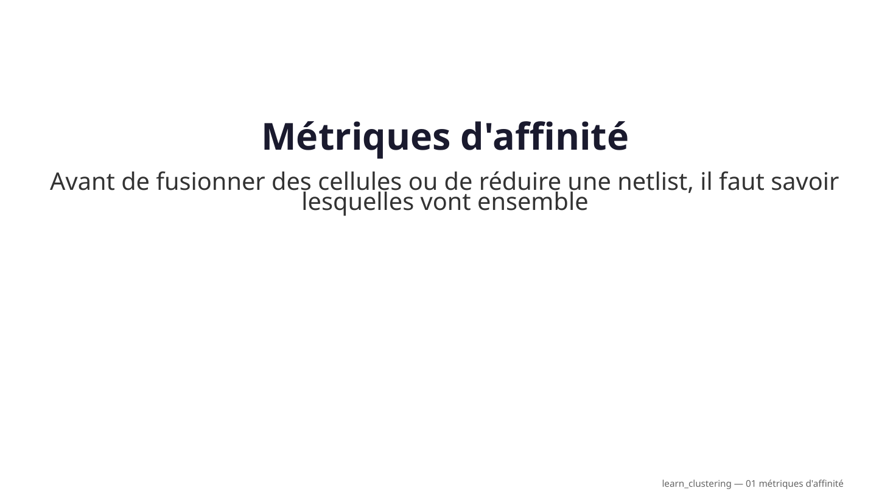


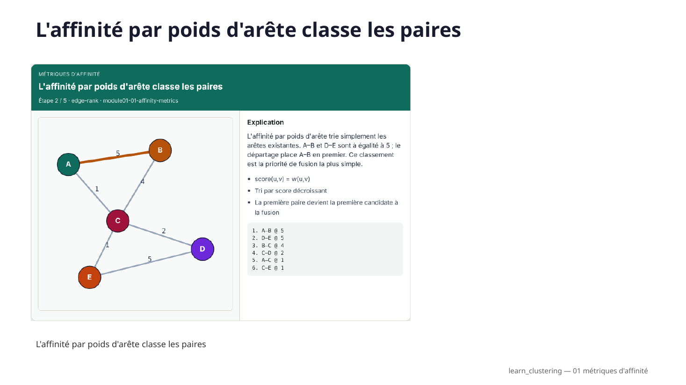

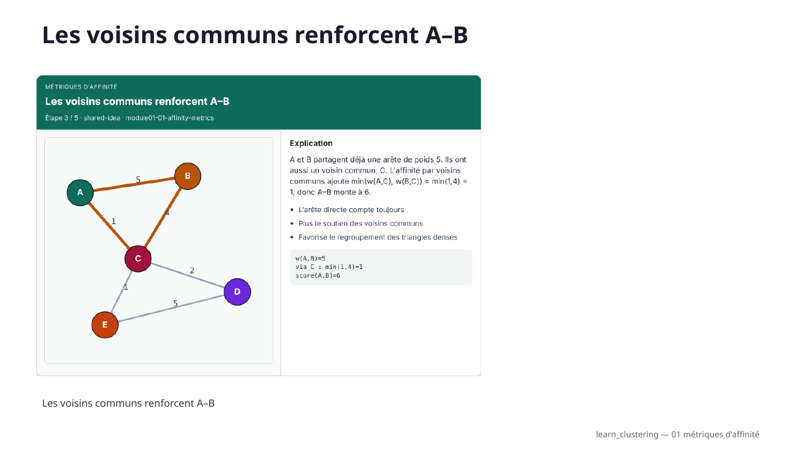


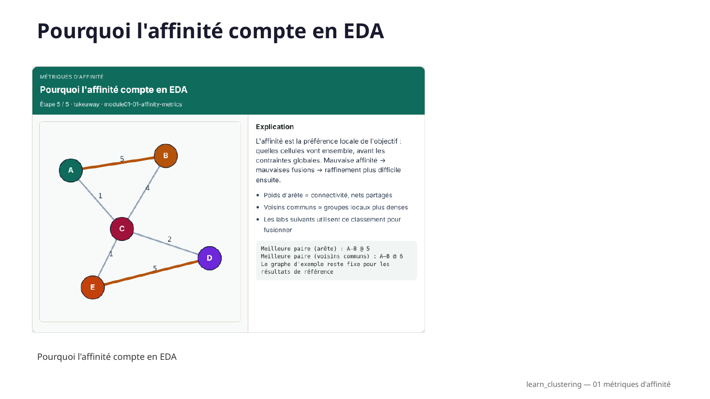

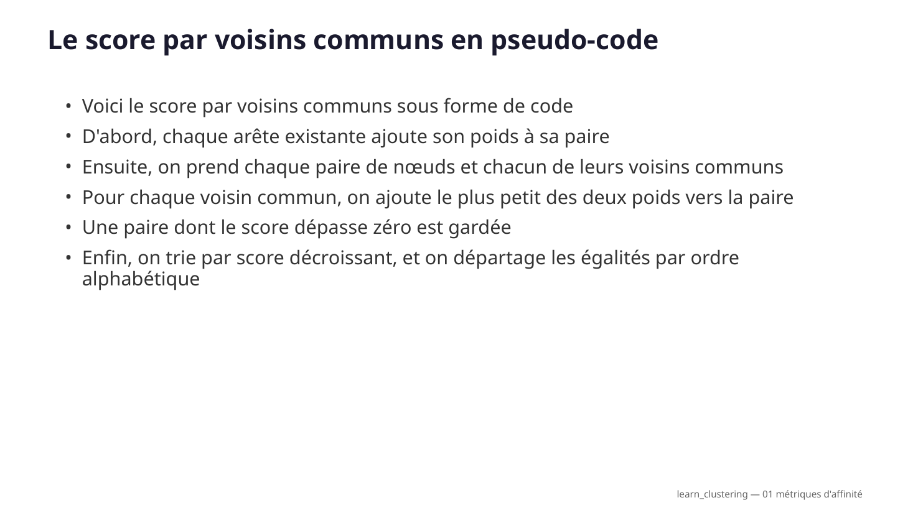

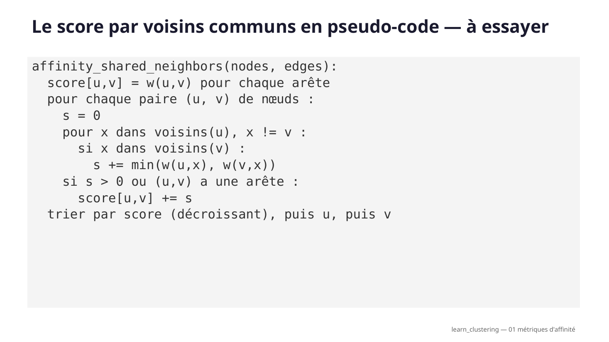

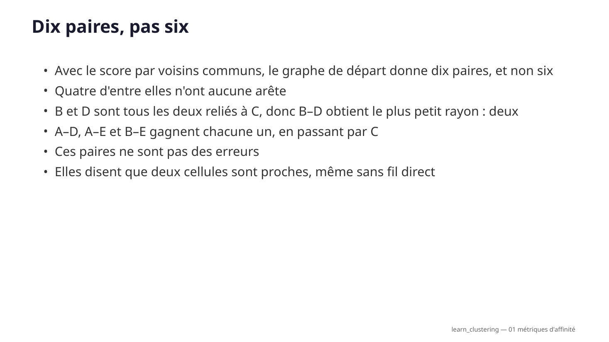

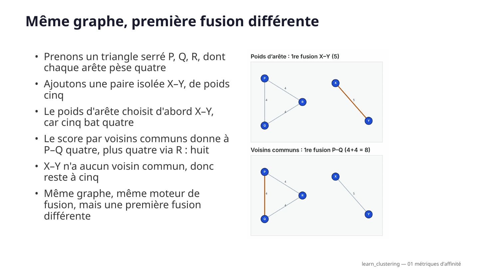

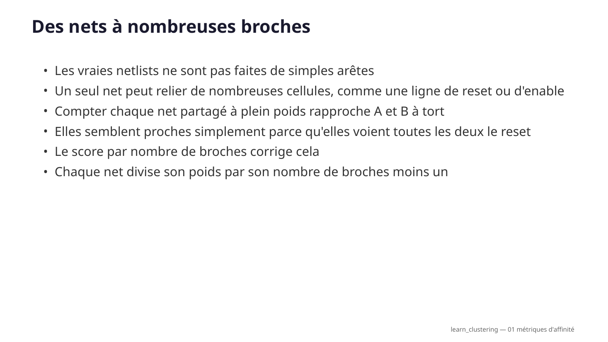

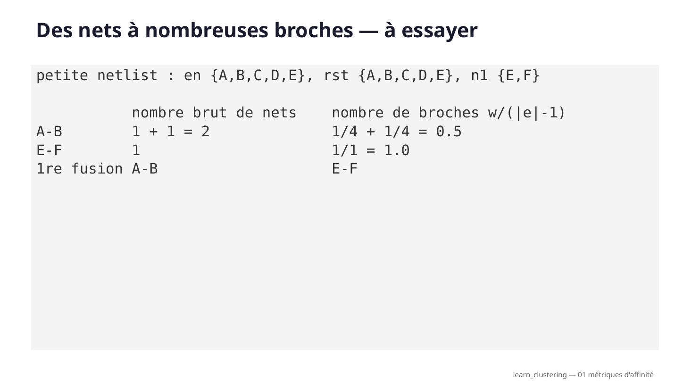

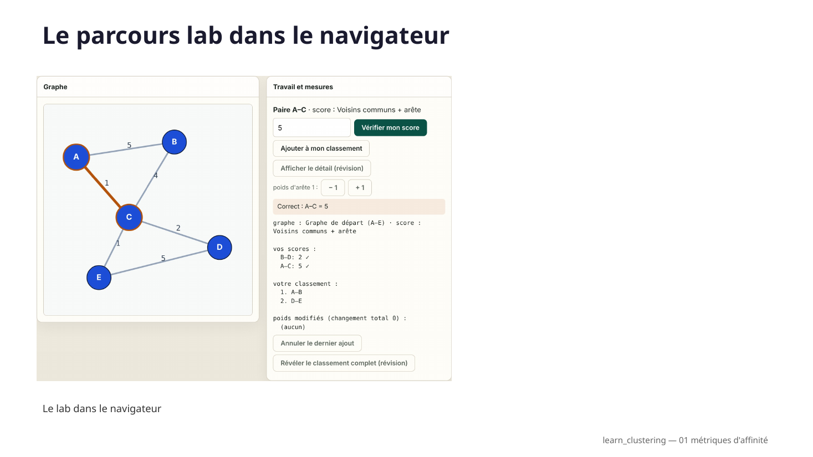

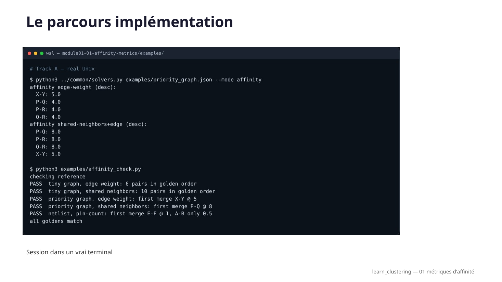

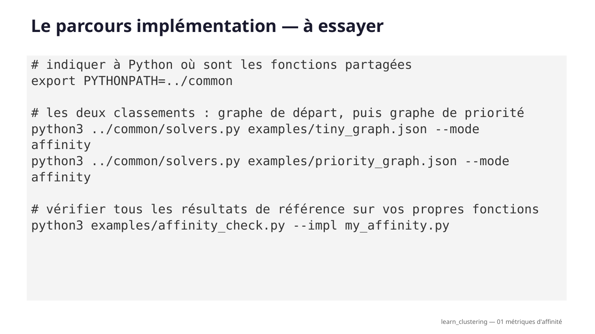

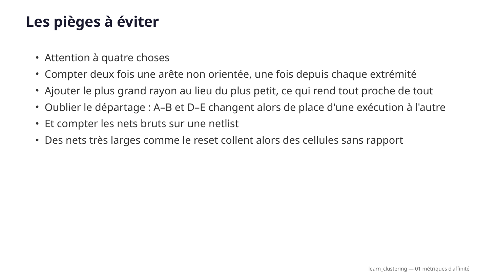

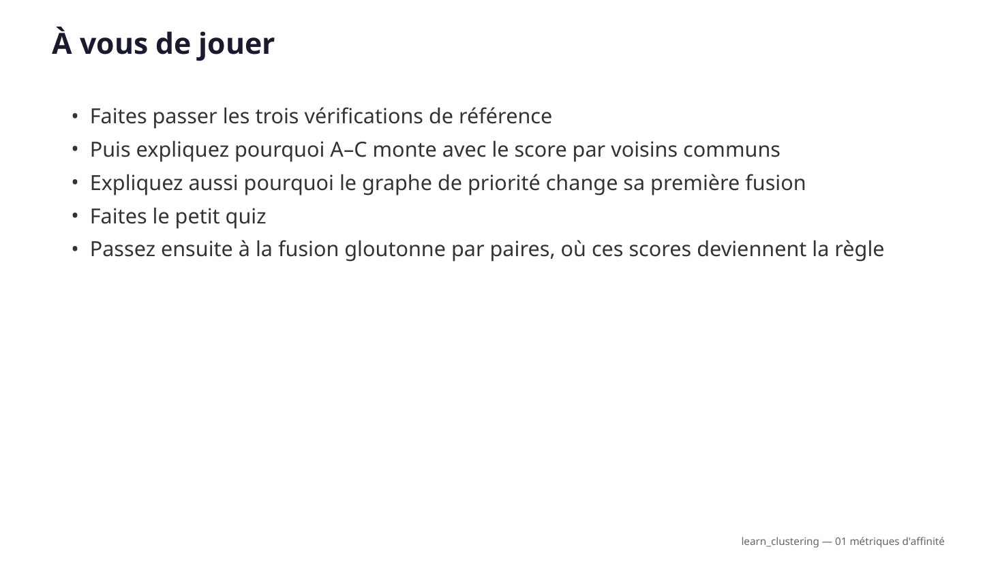
Lab interactif
Faites les calculs vous-même, directement dans le navigateur :
- Choisissez n'importe quelle paire de nœuds, même sans arête, calculez son score à la main et vérifiez-le.
- Construisez votre propre classement, dans l'ordre. Le départage compte.
- Modifiez les poids des arêtes et regardez quelle paire fusionne en premier.
- Trois graphes (départ, priorité, petite netlist) et quatre scores.
Dix défis, de l'initiation à l'approfondissement, vérifient vos propres réponses. Les aides à la révision sont là si vous bloquez, mais ce qu'elles révèlent ne compte plus.
Implémentation (parcours A)
Écrivez vous-même les trois fonctions de score et vérifiez-les avec les résultats de référence. Les commandes ci-dessous se lancent dans le dépôt du cours, depuis courses/learn_clustering/module01-01-affinity-metrics/.
tiny_graph.jsonGraphe de départ (référence 1)
priority_graph.jsonGraphe de priorité : la première fusion s'inverse (référence 2)
tiny_netlist.jsonPetite netlist avec nets larges (référence 3)
affinity_check.pyVérificateur ; --impl contrôle votre code
Exemples — Métriques d'affinité
Parcours A (implémentation). Fonctions partagées : ../common/graphutil.py.
Objectif
Définir trois scores d'affinité, les calculer à la main et en code, et montrer que le choix du score change la paire qui fusionne en premier.
L'affinité répond à une seule question pour chaque paire de cellules : à quel point ces deux-là veulent-elles être dans le même cluster ? Tous les algorithmes de clustering de la suite du cours (fusion gloutonne, réduction multiniveau, clustering d'hypergraphe) partent d'un tel classement : un mauvais score donne de mauvaises fusions, que le raffinement devra réparer ensuite.
| Score | S'applique à | Idée |
|---|---|---|
| Poids d'arête | graphe | connexion directe uniquement |
| Voisins communs + arête | graphe | connexion directe plus le soutien des voisins communs (« connectivité ») |
| Nombre de broches (modèle en clique) | netlist | chaque net répartit son poids entre ses broches, donc les nets larges comptent moins |
API (cible)
affinity_edge_weight(edges) -> list[(u, v, score)] # trié
affinity_shared_neighbors(nodes, edges) -> list[(u, v, score)] # trié
affinity_pin_count(nodes, hyperedges) -> list[(u, v, score)] # trié
Trié veut dire : score décroissant, puis u, puis v par ordre alphabétique. Ce départage
fait partie de l'API : A–B et D–E valent toutes les deux 5, et le résultat de référence met A–B en
premier car A < D. Les labs suivants (fusion gloutonne) prennent la première paire : un départage
instable change donc leurs résultats.
Définitions
Affinité par poids d'arête
score(u,v) = w(u,v)
Affinité par voisins communs + arête
score(u,v) = w(u,v) + somme_x min(w(u,x), w(v,x))
sur les voisins communs x
w(u,v) vaut 0 s'il n'y a pas d'arête directe. Une paire sans arête mais avec un voisin commun
obtient quand même un score (B–D ci-dessous). Les paires dont le score vaudrait 0 ne sont pas
listées. Le min signifie qu'un voisin ne soutient une paire qu'autant que son rayon le plus faible.
Affinité par nombre de broches (modèle en clique) pour les netlists, où un net peut relier de nombreuses broches :
score(u,v) = somme, sur les nets e contenant u et v, de w(e) / (|e| - 1)
|e| est le nombre de broches du net. Un net à 2 broches donne tout son poids ; un net à 5 broches
ne donne qu'un quart à chaque paire. Les nets larges comme le reset, l'enable ou l'horloge touchent
de nombreuses cellules et ne doivent pas toutes les coller ensemble.
Pseudo-code
affinity_shared_neighbors(nodes, edges):
adj = table d'adjacence, adj[u][v] = w(u,v) (dans les deux sens)
score = {}
pour (u, v, w) dans edges : score[u,v] += w # partie directe
pour chaque paire non ordonnée (u, v) de nœuds :
s = 0
pour x dans voisins(u), x != v :
si x dans voisins(v) :
s += min(adj[u][x], adj[v][x])
si s > 0 ou (u,v) dans score : score[u,v] += s
renvoyer les paires triées par (-score, u, v)
affinity_pin_count(nodes, nets):
score = {}
pour chaque net e de broches P (|P| >= 2) :
part = w(e) / (|P| - 1)
pour chaque paire (u, v) de P : score[u,v] += part
renvoyer les paires triées par (-score, u, v)
Référence 1 — graphe de départ (examples/tiny_graph.json)
Arêtes : A–B 5, A–C 1, B–C 4, C–D 2, D–E 5, C–E 1.
Poids d'arête (exactement les six arêtes existantes) :
| Rang | Paire | Score |
|---|---|---|
| 1 | A–B | 5 |
| 2 | D–E | 5 |
| 3 | B–C | 4 |
| 4 | C–D | 2 |
| 5 | A–C | 1 |
| 6 | C–E | 1 |
Voisins communs + arête (dix paires : les six arêtes, plus quatre paires qui n'ont qu'un voisin en commun) :
| Rang | Paire | Score | Pourquoi |
|---|---|---|---|
| 1 | A–B | 6 | 5 + via C min(1,4)=1 |
| 2 | D–E | 6 | 5 + via C min(2,1)=1 |
| 3 | A–C | 5 | 1 + via B min(5,4)=4 |
| 4 | B–C | 5 | 4 + via A min(5,1)=1 |
| 5 | C–D | 3 | 2 + via E min(1,5)=1 |
| 6 | C–E | 3 | 1 + via D min(2,5)=2 |
| 7 | B–D | 2 | pas d'arête ; via C min(4,2)=2 |
| 8 | A–D | 1 | pas d'arête ; via C min(1,2)=1 |
| 9 | A–E | 1 | pas d'arête ; via C min(1,1)=1 |
| 10 | B–E | 1 | pas d'arête ; via C min(4,1)=1 |
L'arête faible A–C passe du rang 5 au rang 3, car A et C sont tous les deux fortement reliés à B : le triangle A–B–C forme un groupe dense.
Référence 2 — l'affinité change la première fusion (examples/priority_graph.json)
Un triangle serré P–Q–R (chaque arête pèse 4) et une paire isolée X–Y (poids 5).
| Score | Première fusion | Pourquoi |
|---|---|---|
| Poids d'arête | X–Y @ 5 | l'arête la plus lourde |
| Voisins communs + arête | P–Q @ 8 | 4 + via R min(4,4)=4 ; X–Y n'a aucun voisin commun et reste à 5 |
Même graphe, même algorithme, première fusion différente. C'est pourquoi le choix de l'affinité est une décision de conception, pas un détail.
Référence 3 — les nets larges (examples/tiny_netlist.json)
Deux nets à 5 broches (en, rst) touchent A–E ; un net privé à 2 broches relie E–F. Tous les poids valent 1.
| Score | A–B (et chaque paire de A–E) | E–F | Première fusion |
|---|---|---|---|
| Nombre brut de nets (somme des w) | 2 | 1 | A–B |
| Nombre de broches, w/(|e|−1) | 1/4 + 1/4 = 0.5 | 1.0 | E–F |
Compter naïvement les nets partagés dit que A–B vont ensemble simplement parce qu'elles voient toutes les deux l'enable et le reset. Le score par nombre de broches dit que E–F, la seule paire reliée par une connexion privée, compte davantage. Le clustering d'une netlist devient du clustering d'hypergraphe (module 03-03) ; ce score fait le lien.
À essayer
Depuis le dossier de ce module :
# indiquer à Python où sont les fonctions partagées
export PYTHONPATH=../common
# afficher les deux classements du graphe de départ
python3 ../common/solvers.py examples/tiny_graph.json --mode affinity
# idem pour le graphe de priorité : comparez la première ligne de chaque tableau
python3 ../common/solvers.py examples/priority_graph.json --mode affinity
# vérifier tous les résultats de référence et afficher les classements, nombre de broches compris
python3 examples/affinity_check.py --show
# vérifier VOTRE implémentation (les fonctions pas encore écrites sont ignorées)
python3 examples/affinity_check.py --impl my_affinity.py
Tests unitaires des fonctions partagées, depuis courses/learn_clustering :
PYTHONPATH=common python3 -m unittest common.test_solvers.TestFoundations -v
Pour démarrer
- Calculez à la main le score par voisins communs de A–C, B–D et C–E, puis comparez avec la référence 1.
- Implémentez
affinity_edge_weightetaffinity_shared_neighbors; lancezaffinity_check.py --impljusqu'à ce que les vérifications sur les graphes passent. (Il fournit les arêtes dans l'ordre inverse : un départage oublié échoue.) - Expliquez en une phrase pourquoi A–C monte avec le score par voisins communs.
- Sur le graphe de priorité, expliquez pourquoi la première fusion change d'un score à l'autre.
- Implémentez
affinity_pin_count. Expliquez pourquoi A–B tombe à 0.5 alors que E–F reste à 1. - Pour aller plus loin : copiez le graphe de départ et passez D–E de 5 à 6. Prédisez d'abord les deux classements, puis lancez le solveur sur votre copie. Quelle paire est maintenant en tête, et A–C monte-t-elle toujours ?
Quiz
7 questions rapides sur ce lab. Choisissez une réponse pour chacune, puis vérifiez.
Transcription complète de la narration
Métriques d'affinité
Avant de fusionner des cellules ou de réduire une netlist, il faut savoir lesquelles vont ensemble. Ce score, c'est l'affinité. Vous allez comparer le poids d'arête et le score par voisins communs. Les deux sont testés sur le même petit graphe, pour voir qui fusionne en premier. Ensuite, vous verrez un graphe où ces deux scores ne sont pas d'accord. Enfin, un troisième score traite les vraies netlists, où un seul net touche de nombreuses cellules.
Un petit graphe pondéré
Cinq cellules, de A à E, reliées par des arêtes pondérées. Les arêtes lourdes A–B et D–E pèsent toutes les deux cinq ; le pont qui passe par C est plus faible. C'est l'affinité qui va décider quelles paires veulent former un cluster en premier.
L'affinité par poids d'arête classe les paires
L'affinité par poids d'arête se contente de trier les arêtes existantes. A–B et D–E sont à égalité à cinq ; le départage place A–B en premier. Ce classement est la priorité de fusion la plus simple.
Les voisins communs renforcent A–B
A et B partagent déjà une arête de poids cinq. Ils ont aussi un voisin commun : C. L'affinité par voisins communs ajoute le plus petit des deux rayons, c'est-à-dire un, donc A–B monte à six.
Le classement par voisins communs rebat les cartes
Avec le score par voisins communs, A–B et D–E mènent à six. L'arête faible A–C bondit à cinq grâce à B. Des paires sans arête, comme B–D, peuvent apparaître uniquement grâce à leurs voisins communs.
Pourquoi l'affinité compte en EDA
L'affinité, c'est la préférence locale de l'objectif : quelles cellules vont ensemble, avant les contraintes globales. Une mauvaise affinité donne de mauvaises fusions, et un raffinement plus difficile ensuite.
Le score par voisins communs en pseudo-code
Voici le score par voisins communs sous forme de code. D'abord, chaque arête existante ajoute son poids à sa paire. Ensuite, on prend chaque paire de nœuds et chacun de leurs voisins communs. Pour chaque voisin commun, on ajoute le plus petit des deux poids vers la paire. Une paire dont le score dépasse zéro est gardée. Enfin, on trie par score décroissant, et on départage les égalités par ordre alphabétique. Ainsi, la liste est toujours la même.
Dix paires, pas six
Avec le score par voisins communs, le graphe de départ donne dix paires, et non six. Quatre d'entre elles n'ont aucune arête. B et D sont tous les deux reliés à C, donc B–D obtient le plus petit rayon : deux. A–D, A–E et B–E gagnent chacune un, en passant par C. Ces paires ne sont pas des erreurs. Elles disent que deux cellules sont proches, même sans fil direct. Une paire n'est exclue que si son score vaut zéro.
Même graphe, première fusion différente
Prenons un triangle serré P, Q, R, dont chaque arête pèse quatre. Ajoutons une paire isolée X–Y, de poids cinq. Le poids d'arête choisit d'abord X–Y, car cinq bat quatre. Le score par voisins communs donne à P–Q quatre, plus quatre via R : huit. X–Y n'a aucun voisin commun, donc reste à cinq. Même graphe, même moteur de fusion, mais une première fusion différente.
Des nets à nombreuses broches
Les vraies netlists ne sont pas faites de simples arêtes. Un seul net peut relier de nombreuses cellules, comme une ligne de reset ou d'enable. Compter chaque net partagé à plein poids rapproche A et B à tort. Elles semblent proches simplement parce qu'elles voient toutes les deux le reset. Le score par nombre de broches corrige cela. Chaque net divise son poids par son nombre de broches moins un. Un net à deux broches compte donc entièrement. Un net à cinq broches ne donne qu'un quart à chaque paire.
Le parcours lab dans le navigateur
Dans le lab du navigateur, c'est vous qui calculez les scores. Cliquez sur deux nœuds pour choisir une paire, même une paire sans arête, calculez son score à la main, puis saisissez-le. Vous pouvez aussi construire votre propre classement, une paire à la fois, et modifier les poids des arêtes pour voir quelle paire fusionne en premier. Vous pouvez passer d'un graphe à l'autre et d'un score à l'autre. Les dix défis vérifient ce que vous avez saisi, votre classement et vos modifications. Le détail du calcul et le classement complet sont là pour réviser, mais tout ce qu'ils révèlent ne compte plus.
Le parcours implémentation
Dans le parcours implémentation, affichez les deux classements pour le graphe de départ, puis pour le graphe de priorité, et comparez la première ligne de chaque tableau. Ensuite, écrivez vos propres fonctions de score, y compris le nombre de broches, et lancez le vérificateur sur votre fichier. Il contrôle les trois scores, et il fournit les arêtes dans le désordre : un départage oublié apparaît donc comme un échec.
Les pièges à éviter
Attention à quatre choses. Compter deux fois une arête non orientée, une fois depuis chaque extrémité. Ajouter le plus grand rayon au lieu du plus petit, ce qui rend tout proche de tout. Oublier le départage : A–B et D–E changent alors de place d'une exécution à l'autre. Et compter les nets bruts sur une netlist. Des nets très larges comme le reset collent alors des cellules sans rapport.
À vous de jouer
Faites passer les trois vérifications de référence. Puis expliquez pourquoi A–C monte avec le score par voisins communs. Expliquez aussi pourquoi le graphe de priorité change sa première fusion. Faites le petit quiz. Passez ensuite à la fusion gloutonne par paires, où ces scores deviennent la règle.